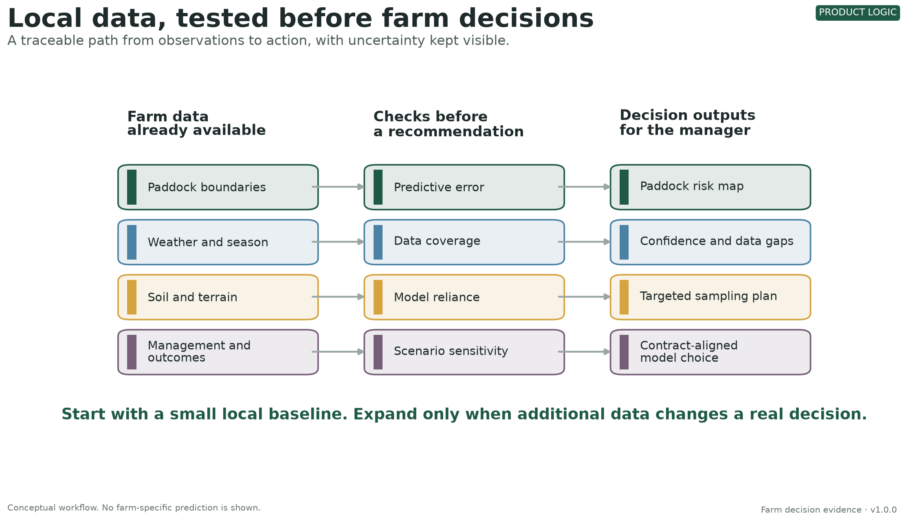
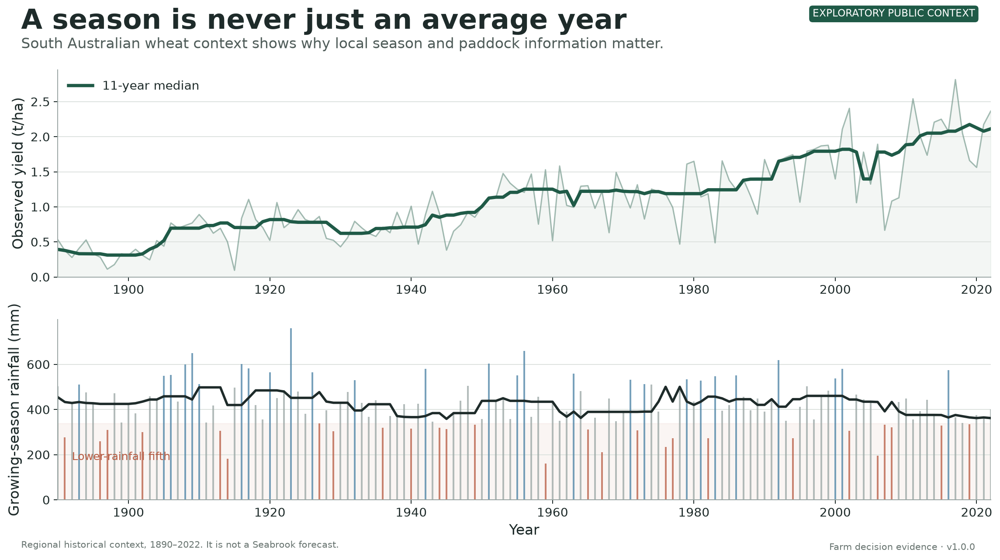
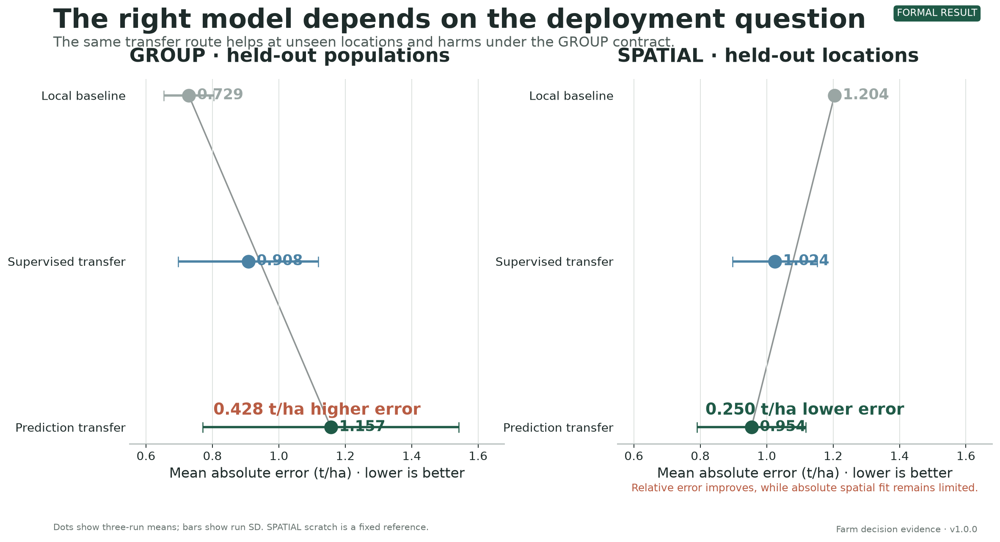
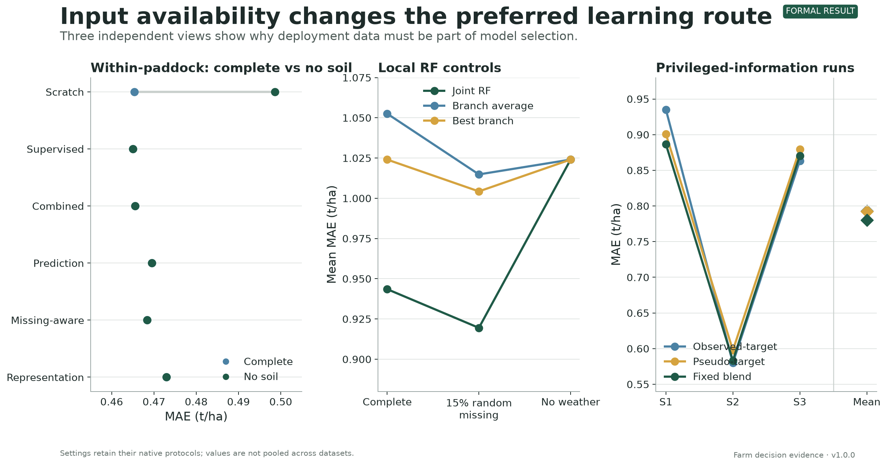
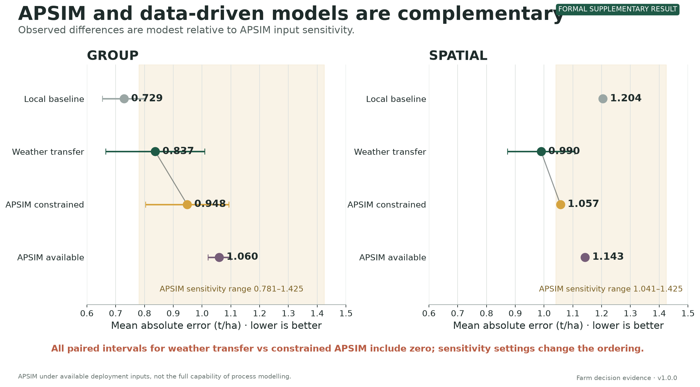
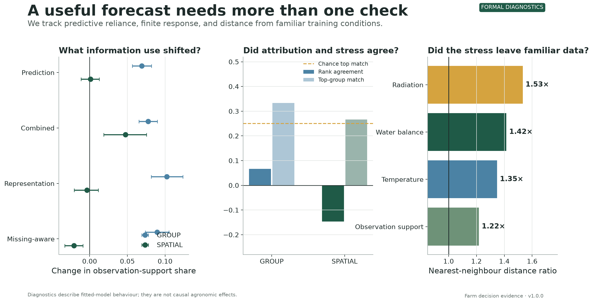
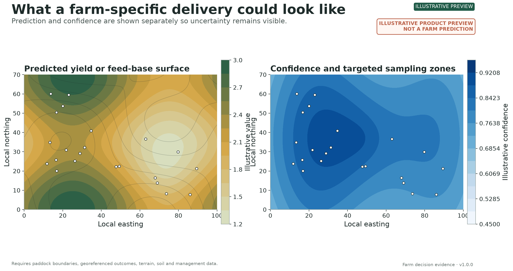
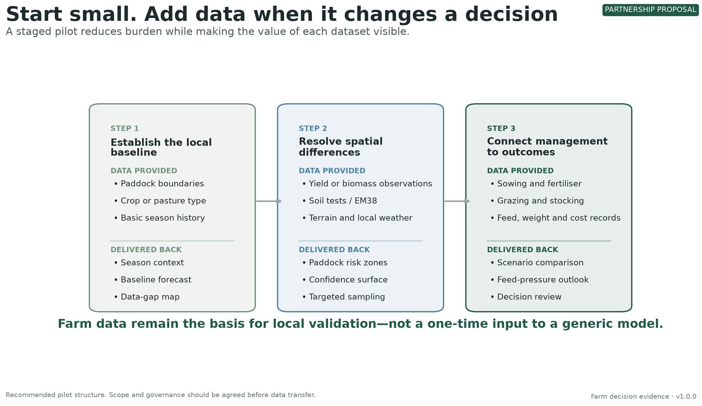
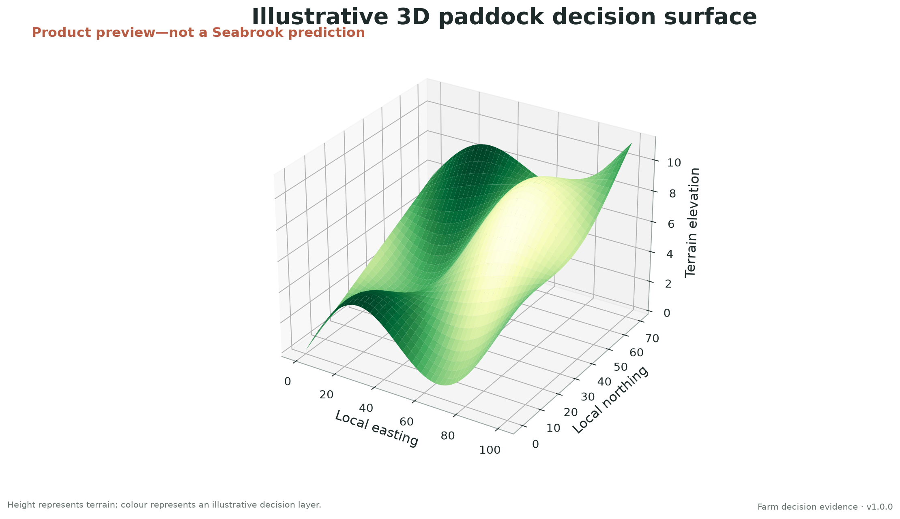
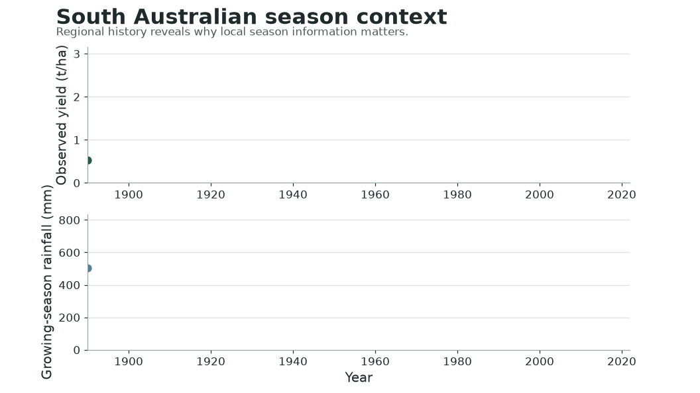

From farm data to a decision product

Formal results, contextual history and clearly labelled product previews. Every asset is generated from versioned scripts and source manifests.









